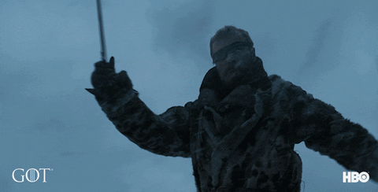

Facts about Game of Thrones - Descriptive list
- THERE’S AN UNAIRED GAME OF THRONES PILOT.
- - The first pilot, directed by Spotlight writer-director Tom McCarthy, was so terrible it had to be shelved and reshot.
- CATELYN STARK AND DAENERYS TARGARYEN WERE ORIGINALLY PLAYED BY OTHER ACTORS.
- - In the original pilot, Catelyn Stark and Daenerys Targaryen were played by Jennifer Ehle and Tamzin Merchant, respectively.
- GEORGE R.R. MARTIN HAD A CAMEO IN THE ORIGINAL EPISODE.
- - George R.R. Martin had a cameo in the original pilot as a guest at Daenerys and Khal Drogo’s wedding. When the role of Daenerys was recast, the scene had to be scrapped.
- ARYA STARK WAS THE HARDEST CHARACTER TO CAST.
- - They found Maisie Williams while going through audition videos in a Moroccan hotel lobby with bad Wi-Fi, and selected her video based on a small thumbnail that looked promising.